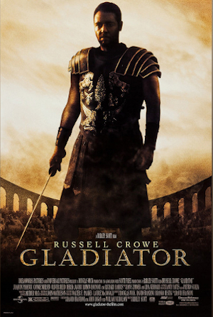
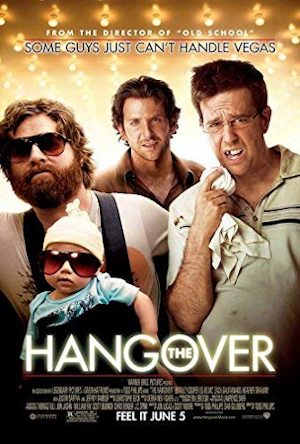
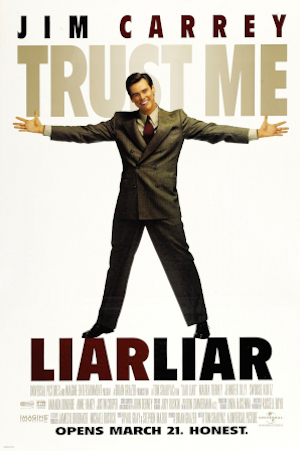
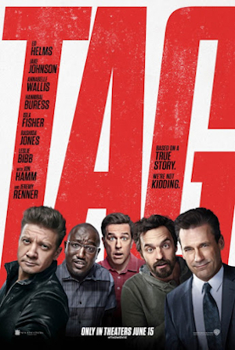
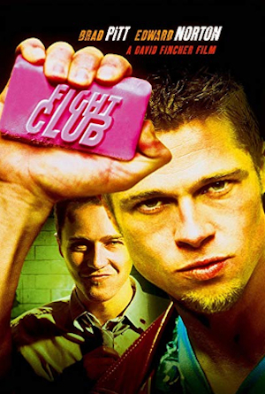
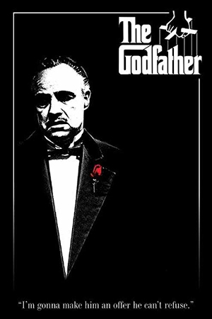
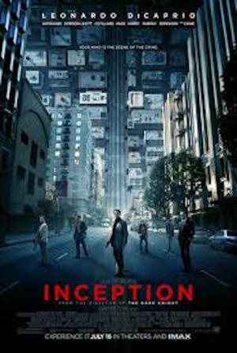
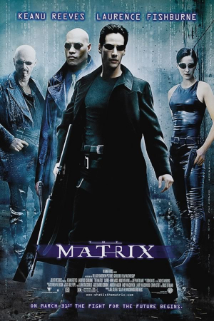

Movies, also known as films, are a type of visual communication which uses moving pictures and sound to tell stories or teach people something.
Please select a genre of film and a movie:
Let's Talk About Movies
People in every part of the world watch movies as a type of entertainment, a way to have fun. For some people, fun movies can mean movies that make them laugh, while for others it can mean movies that make them cry, or feel afraid.
Most movies are made so that they can be shown on big screens at movie theatres and at home. After movies are shown on movie screens for a period of weeks or months, they may be marketed through several other media. They are shown on pay television or cable television, and sold or rented on DVD disks or videocassette tapes, so that people can watch the movies at home. You can also download or stream movies. Older movies are shown on television broadcasting stations.
The Simple English Wiktionary has a definition for: movie.
A movie camera or video camera takes pictures very quickly, usually at 24 or 25 pictures (frames) every second. When a movie projector, a computer, or a television shows the pictures at that rate, it looks like the things shown in the set of pictures are really moving. Sound is either recorded at the same time, or added later. The sounds in a movie usually include the sounds of people talking (which is called dialogue), music (which is called the "soundtrack"), and sound effects, the sounds of activities that are happening in the movie (such as doors opening or guns being fired). In the 20th century the camera used photographic film. The product is still often called a "film" even though there usually is no film.
Avengers: EndGame (2019)
The grave course of events set in motion by Thanos that wiped out half the universe and fractured the Avengers ranks compels the remaining Avengers to take one final stand in Marvel Studios' grand conclusion to twenty-two films, "Avengers: Endgame".
Cast: Robert Downey Jr., Chris Evans, Mark Ruffalo, Chris Hemsworth, Scarlett Johansson, Jeremy Renner, Brie Larson and Paul Rudd.
Rating:
PG-13 (for sequences of sci-fi violence and action, and some language)
Genre:
Action & Adventure, Drama, Science Fiction & Fantasy
Directed By:
Joe Russo, Anthony Russo
Written By:
Christopher Markus, Stephen McFeely
In Theaters:
Apr 26, 2019 Wide
Disc/Streaming:
Jul 30, 2019
Runtime:
182 minutes
Studio:
Marvel Studios
Gladiator (2000)

A man robbed of his name and his dignity strives to win them back, and gain the freedom of his people, in this epic historical drama from director Ridley Scott. In the year 180, the death of emperor Marcus Aurelius (Richard Harris) throws the Roman Empire into chaos. Maximus (Russell Crowe) is one of the Roman army's most capable and trusted generals and a key advisor to the emperor. As Marcus' devious son Commodus (Joaquin Phoenix) ascends to the throne, Maximus is set to be executed. He escapes, but is captured by slave traders. Renamed Spaniard and forced to become a gladiator, Maximus must battle to the death with other men for the amusement of paying audiences. His battle skills serve him well, and he becomes one of the most famous and admired men to fight in the Colosseum. Determined to avenge himself against the man who took away his freedom and laid waste to his family, Maximus believes that he can use his fame and skill in the ring to avenge the loss of his family and former glory. As the gladiator begins to challenge his rule, Commodus decides to put his own fighting mettle to the test by squaring off with Maximus in a battle to the death. Gladiator also features Derek Jacobi, Connie Nielsen, Djimon Hounsou, and Oliver Reed, who died of a heart attack midway through production.
Cast: Russell Crowe, Joaquin Phoenix, Connie Nielsen, Richard Harris and Oliver Reed.
Rating:
R (for intense graphic combat)
Genre:
Action & Adventure, Classics, Drama
Directed By:
Ridley Scott
Written By:
David H. Franzoni, William Nicholson, John Logan
In Theaters:
May 5, 2000 Wide
Disc/Streaming:
Nov 21, 2000
Runtime:
171 minutes
Studio:
Dreamworks Distribution LLC
Taken (1998)
A man being held hostage discovers others besides his captors have it in for him in this taut thriller. Ethan Grover (Dabney Coleman) is a successful businessman who has made more than his share of enemies. His wife, Judy (Linda Smith), has been having an affair with Allan (Stewart Bick), one of Ethan's partners who has been embezzling money from the firm. Syd (Michael Rudder), Ethan's accountant, has been in cahoots with Allan, investing in a dubious real estate venture. And Alex (Brett Watson), Judy's son from an earlier marriage, is a drug addict who has been draining his stepfather's bank account to feed his habit. So when Ethan is kidnapped and held for a two-million-dollar ransom, his immediate family and closest business associates don't immediately come to his aid. Ethan's loyal secretary, Sandra (Dorothee Berryman), tries to untangle the web of deceit and betrayal that has enveloped him while Ethan tries to win the friendship of his kidnappers.
Cast: Liam Neeson, Maggie Grace, Famke Janssen and Katie Cassidy.
Rating:
R (adult situations)
Genre:
Drama, Mystery & Suspense
Directed By:
Max Fischer
Written By:
Pierre Lapointe
Disc/Streaming:
Mar 15, 2005
Runtime:
105 minutes
Studio:
Avalanche Entertainment
The Hangover (2009)

A blowout Las Vegas bachelor party turns into a race against time when three hung-over groomsmen awaken after a night of drunken debauchery to find that the groom has gone missing, and attempt to get him to the alter in time for his wedding. In 48 hours, Doug is scheduled to walk down the aisle, effectively ending his reign as a rowdy bachelor. Realizing that this is their last blowout with their best friend, Doug's groomsmen organize a Sin City bachelor bash he'll never forget. The next morning, the groomsmen come to in their Caesar's Palace suite to find a tiger in the bathroom and a six-month-old baby tucked away in the closet. Unfortunately, Doug is nowhere to be found. With no memory of the previous night's transgressions and precious little time to spare, the trio sets out in a hazy attempt to retrace their steps and discover exactly where things went wrong. Will they find Doug in time to get him to the wedding back in Los Angeles, or will his bride experience the sharp sting of disappointment when she walks down the aisle to discover that her future husband is nowhere to be found?
Cast: Bradley Cooper, Ed Helms, Zach Galifianakis, Heather Graham, Justin Bartha and Jeffrey Tambor.
Rating:
R (for pervasive language, sexual content including nudity, and some drug material)
Genre:
Comedy
Directed By:
Todd Phillips
Written By:
Jon Lucas, Todd Phillips, Scott Moore
In Theaters:
Jun 5, 2009 Wide
Disc/Streaming:
Dec 15, 2009
Box Office:
$277,313,371
Runtime:
100 minutes
Studio:
Warner Bros. Pictures
Liar Liar (1997)

An attorney who tells the truth for 24 hours straight? This has got to be the movies! Fletcher Reede (Jim Carrey) is a lawyer obsessed with his career, and he's devoted his life to bending the truth to his advantage. This habit has broken up his marriage to Audrey (Maura Tierney) and isn't doing much good for his relationship with his young son Max (Justin Cooper). Fletcher repeatedly promised Max that he'll be there for Max's eighth birthday party, but when an important assignment comes up at work, Fletcher calls Audrey and makes an excuse so flimsy that even Max can see through it. When it comes time to blow out the candles on his cake, Max makes a wish: that his Dad could go just one day without telling a lie. Suddenly, Max finds himself physically incapable of saying anything that isn't true -- which, given the divorce settlement case he's just been handed, is going to make his next day in court very interesting indeed. While designed to show off a warmer and more likable side of Jim Carrey's personality, Liar Liar still revels in the broad physical comedy that made Carrey a star in Ace Ventura, Pet Detective -- which makes sense, since both were directed by Tom Shadyac. Both Carrey's fans and foes will get a chuckle out of Swoosie Kurtz's tongue-in-cheek insult to the film's star in the blooper reel that runs under the final credits.
Cast: Jim Carrey, Maura Tierney, Justin Cooper, Jennifer Tilly, Cary Elwes, Amanda Donohoe, Jason Bernard, Swoosie Kurtz and Anne Haney.
Rating:
PG-13 (adult situations/language, violence)
Genre:
Comedy
Directed By:
Tom Shadyac
Written By:
Stephen Mazur, Paul Guay
In Theaters:
Jun 1, 1997 Wide
Disc/Streaming:
Jan 20, 1998
Runtime:
87 minutes
Studio:
Universal Pictures
Tag (2018)

For one month every year, five highly competitive friends hit the ground running in a no-holds-barred game of tag they've been playing since the first grade--risking their necks, their jobs and their relationships to take each other down with the battle cry "You're It!" This year, the game coincides with the wedding of their only undefeated player, which should finally make him an easy target. But he knows they're coming... and he's ready. Based on a true story, "Tag" shows how far some guys will go to be the last man standing.
Cast: Ed Helms, Jake Johnson, Annabelle Wallis, Hannibal Buress, Isla Fisher, Rashida Jones, Leslie Bibb, Jon Hamm and Jeremy Renner.
Rating:
R (for language throughout, crude sexual content, drug use and brief nudity)
Genre:
Comedy
Directed By:
Jeff Tomsic
Written By:
Rob McKittrick, Mark Steilen
In Theaters:
Jun 15, 2018 Wide
Disc/Streaming:
Aug 28, 2018
Studio:
Warner Bros. Pictures
Fight Club (1999)

In this darkly comic drama, Edward Norton stars as a depressed young man (named in the credits only as "Narrator") who has become a small cog in the world of big business. He doesn't like his work and gets no sense of reward from it, attempting instead to drown his sorrows by putting together the "perfect" apartment. He can't sleep and feels alienated from the world at large; he's become so desperate to relate to others that he's taken to visiting support groups for patients with terminal diseases so that he'll have people to talk to. One day on a business flight, he discovers Tyler Durden (Brad Pitt), a charming iconoclast who sells soap. Tyler doesn't put much stock in the materialistic world, and he believes that one can learn a great deal through pain, misfortune, and chaos. Tyler cheerfully challenges his new friend to a fight. Our Narrator finds that bare-knuckle brawling makes him feel more alive than he has in years, and soon the two become friends and roommates, meeting informally to fight once a week. As more men join in, the "fight club" becomes an underground sensation, even though it's a closely guarded secret among the participants. (First rule: Don't talk about fight club. Second rule: Don't talk about fight club.) But as our Narrator and Tyler bond through violence, a strange situation becomes more complicated when Tyler becomes involved with Marla (Helena Bonham Carter), whom our Narrator became infatuated with when they were both crashing the support-group circuit. Based on the novel by Chuck Palahniuk, Fight Club was directed by David Fincher, who previously directed Pitt in the thriller Seven.
Cast: Brad Pitt, Edward Norton, Helena Bonham Carter, Meat Loaf and Jared Leto.
Rating:
R (for disturbing and graphic depiction of violent anti-social behavior, sexuality and language)
Genre:
Comedy, Drama
Directed By:
David Fincher
Written By:
Jim Uhls
In Theaters:
Oct 15, 1999 Wide
Disc/Streaming:
Jun 6, 2000
Runtime:
139 minutes
Studio:
20th Century Fox
Pulp Fiction (1994)
Outrageously violent, time-twisting, and in love with language, Pulp Fiction was widely considered the most influential American movie of the 1990s. Director and co-screenwriter Quentin Tarantino synthesized such seemingly disparate traditions as the syncopated language of David Mamet; the serious violence of American gangster movies, crime movies, and films noirs mixed up with the wacky violence of cartoons, video games, and Japanese animation; and the fragmented story-telling structures of such experimental classics as Citizen Kane, Rashomon, and La jetée. The Oscar-winning script by Tarantino and Roger Avary intertwines three stories, featuring Samuel L. Jackson and John Travolta, in the role that single-handedly reignited his career, as hit men who have philosophical interchanges on such topics as the French names for American fast food products.
Cast: John Travolta, Samuel L. Jackson, Uma Thurman, Harvey Keitel, Tim Roth, Amanda Plummer, Maria de Medeiros, Ving Rhames, Eric Stoltz, Rosanna Arquette, Christopher Walken and Bruce Willis.
Rating:
R (for strong graphic violence and drug use, pervasive strong language and some sexuality.)
Genre:
Drama
Directed By:
Quentin Tarantino
Written By:
Quentin Tarantino, Roger Avary
In Theaters:
Sep 23, 1994 Wide
Disc/Streaming:
May 19, 1998
Runtime:
154 minutes
Studio:
Miramax Films
The Godfather (1972)

Popularly viewed as one of the best American films ever made, the multi-generational crime saga The Godfather is a touchstone of cinema: one of the most widely imitated, quoted, and lampooned movies of all time. Marlon Brando and Al Pacino star as Vito Corleone and his youngest son, Michael, respectively. It is the late 1940s in New York and Corleone is, in the parlance of organized crime, a "godfather" or "don," the head of a Mafia family. Michael, a free thinker who defied his father by enlisting in the Marines to fight in World War II, has returned a captain and a war hero. Having long ago rejected the family business, Michael shows up at the wedding of his sister, Connie (Talia Shire), with his non-Italian girlfriend, Kay (Diane Keaton), who learns for the first time about the family "business." A few months later at Christmas time, the don barely survives being shot by gunmen in the employ of a drug-trafficking rival whose request for aid from the Corleones' political connections was rejected. After saving his father from a second assassination attempt, Michael persuades his hotheaded eldest brother, Sonny (James Caan), and family advisors Tom Hagen (Robert Duvall) and Sal Tessio (Abe Vigoda) that he should be the one to exact revenge on the men responsible. Nominated for 11 Academy Awards and winning for Best Picture, Best Actor (Marlon Brando), and Best Adapted Screenplay, The Godfather was followed by a pair of sequels.
Cast: Marlon Brando, Al Pacino, James Caan, Richard Castellano, Robert Duvall, Sterling Hayden, John Marley, Richard Conte and Diane Keaton.
Rating:
R (N/A)
Genre:
Drama
Directed By:
Francis Ford Coppola
Written By:
Francis Ford Coppola, Mario Puzo
In Theaters:
Mar 24, 1972 Wide
Disc/Streaming:
Oct 9, 2001
Runtime:
175 minutes
Studio:
Paramount Pictures
Inception (2010)

Visionary filmmaker Christopher Nolan (Memento, The Dark Knight) writes and directs this psychological sci-fi action film about a thief who possesses the power to enter into the dreams of others. Dom Cobb (Leonardo DiCaprio) doesn't steal things, he steals ideas. By projecting himself deep into the subconscious of his targets, he can glean information that even the best computer hackers can't get to. In the world of corporate espionage, Cobb is the ultimate weapon. But even weapons have their weakness, and when Cobb loses everything, he's forced to embark on one final mission in a desperate quest for redemption. This time, Cobb won't be harvesting an idea, but sowing one. Should he and his team of specialists succeed, they will have discovered a new frontier in the art of psychic espionage. They've planned everything to perfection, and they have all the tools to get the job done. Their mission is complicated, however, by the sudden appearance of a malevolent foe that seems to know exactly what they're up to, and precisely how to stop them.
Cast: Leonardo DiCaprio, Ken Watanabe, Joseph Gordon-Levitt, Marion Cotillard, Ellen Page, Tom Hardy, Cillian Murphy, Tom Berenger and Michael Caine.
Rating:
PG-13 (for sequences of violence and action throughout)
In Earth's future, a global crop blight and second Dust Bowl are slowly rendering the planet uninhabitable. Professor Bland, a brilliant N.A.S.A. physicist, is working on plans to save mankind by transporting Earth's population to a new home via a womhole. But first, Brand must send former N.A.S.A. pilot Cooper and a team of researchers through the wormhole and across the galaxy to find out which of three planets could be mankind's new home.
Cast: Matthew McConaughey, Anne Hathaway, Jessica Chastain, Bill Irwin, Ellen Burstyn and Michael Caine.
Rating:
PG-13 (for some intense perilous action and brief strong language)
Genre:
Action & Adventure, Science Fiction & Fantasy
Directed By:
Christopher Nolan
Written By:
Christopher Nolan, Jonathan Nolan
In Theaters:
Nov 7, 2014 Wide
Disc/Streaming:
Mar 31, 2015
Box Office:
$158,737,441
Runtime:
169 minutes
Studio:
Paramount Pictures
The Matrix (1999)

What if virtual reality wasn't just for fun, but was being used to imprison you? That's the dilemma that faces mild-mannered computer jockey Thomas Anderson (Keanu Reeves) in The Matrix. It's the year 1999, and Anderson (hacker alias: Neo) works in a cubicle, manning a computer and doing a little hacking on the side. It's through this latter activity that Thomas makes the acquaintance of Morpheus (Laurence Fishburne), who has some interesting news for Mr. Anderson -- none of what's going on around him is real. The year is actually closer to 2199, and it seems Thomas, like most people, is a victim of The Matrix, a massive artificial intelligence system that has tapped into people's minds and created the illusion of a real world, while using their brains and bodies for energy, tossing them away like spent batteries when they're through. Morpheus, however, is convinced Neo is "The One" who can crack open The Matrix and bring his people to both physical and psychological freedom. The Matrix is the second feature film from the sibling writer/director team of Andy Wachowski and Larry Wachowski, who made an impressive debut with the stylish erotic crime thriller Bound.
Cast: Keanu Reeves, Laurence Fishburne, Carrie-Anne Moss, Hugo Weaving and Joe Pantoliano.